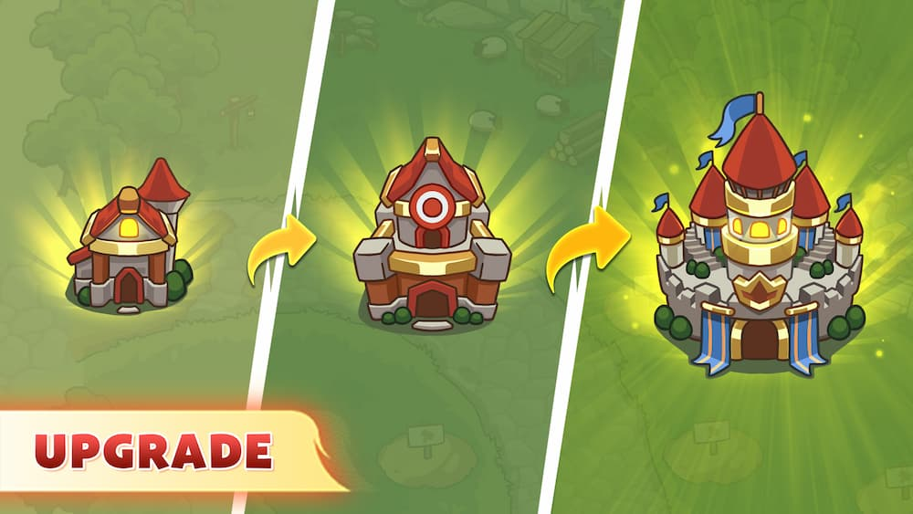
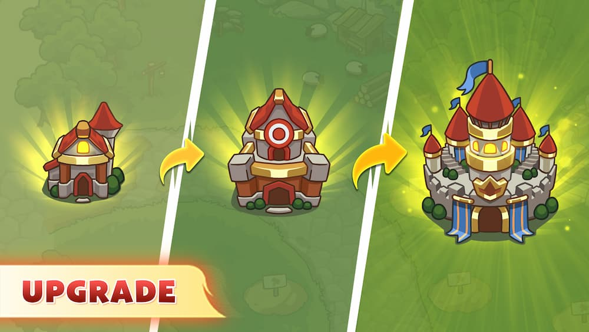

Gece Şövalyesi: Frontier War TD - Krallığı karanlık güçlere karşı savun!
Nighty Knight'ta: Frontier War TD'de, karanlık güçlere karşı destansı bir savaşta krallığı için savaşan cesur bir şövalye rolünü üstleniyorsunuz. Akıllıca kuleler yerleştirerek savunmanızı kurun ve topraklarınızı düşmanların istilasından koruyun!
 Google Play
Google Play
.svg.png) App Store
App Store
Nighty Knight Hakkında Sınır Savaşı TD
Nighty Knight: Frontier War TD, krallığınızı karanlık güçlerin ortak saldırısına karşı savunmanız gereken bir Kule Savunma strateji oyunudur. Ancak, bu kolay bir savaş değil! Düşmanlara direnmek için ışık güçlerini kontrol ederek çeşitli kuleler planlamanız ve inşa etmeniz gerekecek. Her kulenin seçimi ve haritadaki konumu savaşın gidişatını değiştirebilir.
Oyun boyunca, sıradan canavarlardan büyük patronlara kadar birçok düşmanla karşılaşacaksınız ve her birinin kendine has özellikleri var, bu yüzden onlarla savaşmak için doğru stratejileri seçmek önemlidir.
Oyunun ana unsurları:
Kuleler:
Oyunda farklı türde kuleler mevcuttur - atış kuleleri, sihirli kuleler, dondurucu kuleler ve diğerleri. Her kulenin kendi avantajları ve sınırlamaları vardır.
Düşmanlar:
Orklar, iblisler, ölüler ve savaşmanız gereken diğer birçok canavarı içeren karanlık güçler.
Patronlar:
Her seviyede görevinizi çok daha zor hale getiren benzersiz patronlar sizi bekliyor.
Çeşitli haritalar:
Stratejiniz için yeni zorluklar yaratan farklı manzaralara sahip birden fazla harita.
Gece Şövalyesi: Frontier War TD Oynanış
Nighty Knight: Frontier War TD her seviyede doğru planlama ve stratejik düşünmeyi gerektirir. Amacınız, krallığınızı düşman dalgalarına karşı savunmak için kuleleri doğru seçmek ve yerleştirmektir.
Savunma Planlaması
Düşman dalgası başlamadan önce hangi kuleleri inşa edeceğinizi seçmelisiniz. Her kule farklı özelliklere ve maliyetlere sahip olduğu için seçiminiz dikkatli olmalıdır.
Adım Adım Dalgalar
Her seviye birkaç düşman dalgasından oluşur. Yeni bir dalga geldikçe düşmanlar daha güçlü olur, bu yüzden savunma stratejinizi güncellemeniz gerekecektir.
Kaynak Toplama
Düşmanları yok ederek kaynaklar kazanırsınız, bu kaynakları yeni kuleler inşa etmek veya mevcut kulelerinizi güçlendirmek için kullanabilirsiniz.
Yükseltme ve İyileştirme
Kazandığınız kaynakları kulelerinizi güçlendirmek ve daha güçlü düşmanlara karşı daha etkili bir savunma sağlamak için kullanabilirsiniz.
 

Ekstra Oynanış Özellikleri
Nighty Knight: Frontier War TD'de, oyunun her seviyesinde stratejinizi geliştirebilir ve farklı taktiklerle düşman dalgalarını engelleyebilirsiniz. Oyunun bazı özel mekanikleri ve özellikleriyle daha fazla zorluk ve eğlence katabilirsiniz!
Çeşitli Kule Türleri
Farklı kule türleri ve her birinin kendine has yetenekleriyle düşmanları etkili bir şekilde yok edebilirsiniz.
Zorlu Düşmanlar
Her seviyede yeni ve zorlu düşmanlar ortaya çıkar, bu yüzden savunmanızı sürekli olarak geliştirmek önemlidir.
İleri Seviye Yükseltmeler
Kulelerinizi, daha yüksek seviyelerde güçlü düşmanlara karşı daha etkili olabilmesi için yükseltebilirsiniz.
Seviye Atlamalar
Seviyeleri tamamladıkça yeni haritalara geçebilir ve daha zorlu mücadelelere girebilirsiniz.